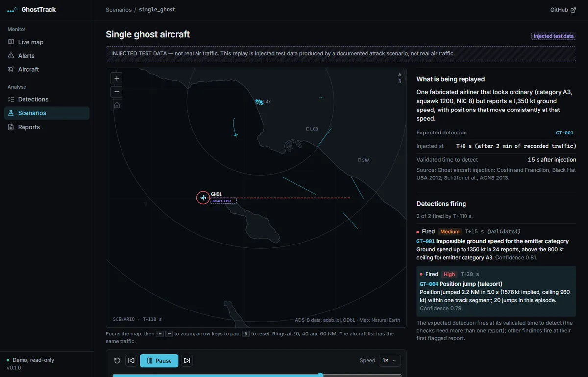
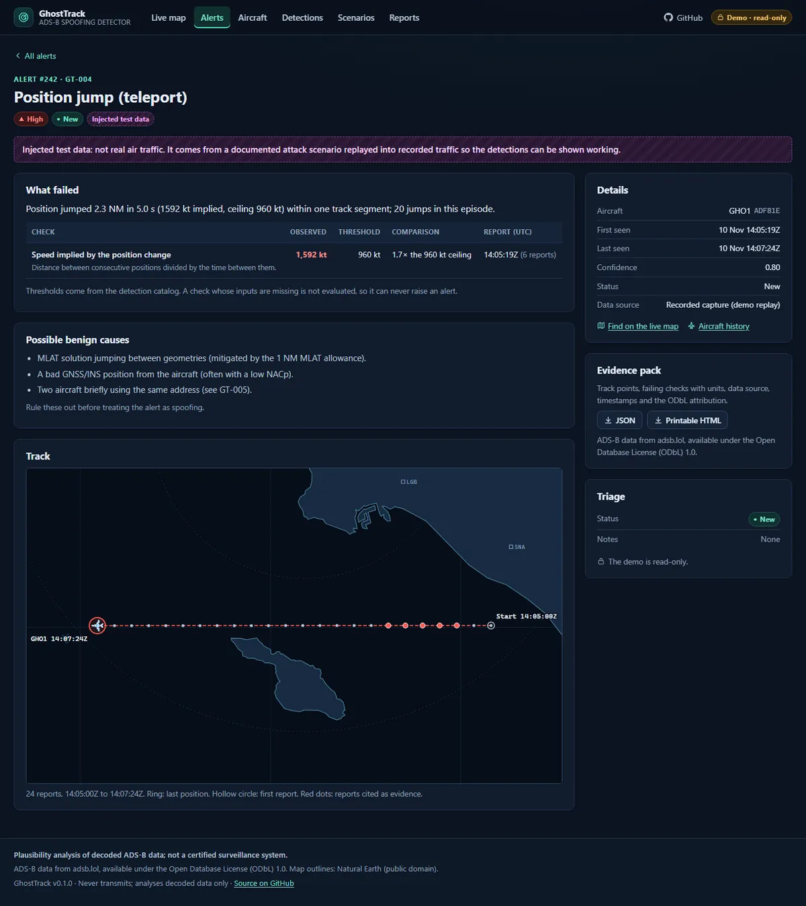

GhostTrack
Summary
GhostTrack is an ADS-B plausibility detector. It watches decoded public civil air traffic within 60 NM of Los Angeles (LAX) from adsb.lol and runs ten physical and consistency checks on every aircraft: speeds no airliner can fly, positions that teleport, one address in two places, an address that belongs to the wrong country, a sudden flood of aircraft. Every finding shows the evidence, the threshold it crossed and the benign causes that could produce the same picture. It is validated against seven injected attack scenarios, measured for false positives on real recordings, and honest about the one attack it cannot see.
GhostTrack is a portfolio project, not a certified surveillance system. It uses civil traffic only, has no radio or transmit code, and everything it flags has benign explanations. A flag is a reason to look, not a verdict.
Problem
ADS-B Out is mandatory in much of US airspace, and the broadcasts are unauthenticated: a receiver cannot tell a genuine report from a fabricated one by the message alone. Researchers have shown ghost injection, flooding and message modification on bench and lab setups (Costin and Francillon at Black Hat USA 2012, Schäfer, Lenders and Martinovic at ACNS 2013, and the Strohmeier survey in IEEE Communications Surveys and Tutorials 2015).
The stronger defenses, such as multilateration across receivers, need per-receiver timestamps that aggregated public data does not carry. I wanted to see how far a single-receiver plausibility layer gets on that data, how quickly it catches each documented attack, how often it cries wolf on real traffic, and where it is blind.
What I built
- Ten catalogued detections. GT-001 to GT-010: impossible ground speed, vertical rate and turn rate, position jump, duplicate ICAO address, address allocation mismatch, barometric versus geometric altitude divergence, emergency squawk without matching behavior, ghost flood and integrity indicators dropping to zero. All thresholds live in one catalog file, and the detections page and the code read the same numbers.
- Tracking by ICAO address using the true position time rather than the poll time, so a late or repeated report cannot fake a jump. Records are sanitized, and bad addresses, out-of-range positions and duplicates are dropped and counted.
- Explained alerts. Severity, confidence, the observed value against the threshold, the possible benign causes, triage (acknowledge or dismiss) and an evidence pack as JSON or standalone HTML.
- A validation harness.
python -m ghosttrack validateinjects seven documented scenarios into recorded traffic and measures detections, collateral findings and the false-positive rate. CI fails if a scenario is missed or the budget is exceeded. Everything injected is labeled "Injected test data" wherever it appears. - A map with no third parties. Hand-drawn SVG from a bundled public-domain outline, no map tiles, no external fonts, and a Content-Security-Policy that allows no other origin.
- Hardening. The only outbound host is a constant in the code, with a path built from numbers only, redirects refused, HTTPS enforced and a 5 MB body cap. PBKDF2-SHA256 hashing, an httpOnly SameSite=Strict cookie, parameterized SQL and a read-only guest mode.
How it works
- Ingest. Live mode fetches civil aircraft inside 60 NM of LAX from adsb.lol, at most one request per region per 10 seconds. Demo mode replays committed recordings, and two further daytime recordings feed validation only.
- Track and detect. GT-001 to GT-010 run over every track, and GT-009 over the whole fleet. A check whose inputs are missing is not evaluated, so it can never raise an alert.
- Triage. Findings become alerts with the evidence and the benign causes beside them. MLAT and TIS-B positions get looser thresholds and lower confidence because they are less precise.
- Validate. The scenarios are replayed into recorded traffic and the output of the real validation run is pasted into the README, where a test fails if it drifts from what the program prints.
| Scenario | Expected | Fired | Time to detect |
|---|---|---|---|
| single_ghost | GT-001 | GT-001, GT-004 | 15 s |
| ghost_flood | GT-009 | GT-009 | 0 s |
| icao_hijack | GT-005 | GT-004, GT-005 | 10 s |
| position_offset | GT-004 | GT-004 | 0 s |
| teleport | GT-004 | GT-004 | 0 s |
| altitude_spoof | GT-007 | GT-007 | 20 s |
| registration_mismatch | GT-006 | GT-006 | 0 s |
| gradual_drift (documented gap) | none | none: gap holds | not detected |

Evidence
All seven injected scenarios are detected. Time to detect is measured at snapshot granularity (about 5 to 6 seconds in the recording the scenarios are injected into, about 10 seconds in the daytime recordings and in live mode), and 0 s means detected on the first injected report.
One scenario is expected not to fire. In gradual_drift a real track is dragged 0.1 NM per poll, which stays inside every kinematic limit, so single-receiver plausibility checks cannot see it. It is kept as a documented gap: validation reports "gap holds", and if a future change makes it fire, validation fails until the scenario is promoted.
The false-positive budget counts only findings of severity medium or high, and is the larger of 1.0 per hour and 1.5 times the measured rate. Across five recordings the counted rate is 0 per hour, so the budget sits at its 1.0 per hour floor. The two daytime recordings do produce low-severity GT-010 findings, which are listed and not budgeted.
558 backend tests and 41 frontend tests pass, and CI runs the validation, the recordings manifest check, pip-audit, npm audit and gitleaks.

What I'd do next
- A thicker false-positive baseline. The measurement comes from five 20-minute recordings, about 1.7 hours in total: three overnight and two from one weekday morning. No other days, weekends or evening peaks, so the 1.0 per hour budget is a floor, not an earned figure.
- Cross-receiver checks. The strongest defense, comparing arrival times at several receivers, needs raw per-receiver timestamps that this data does not carry, so the drift scenario stays a known blind spot.
- Better exclusions. The point endpoint did not deliver the flags the exclusion filter prefers, so it falls back to an address block and other non-civil traffic may appear.
- Real-world evidence. The scenarios are synthetic. They show the checks working on the attacks they were written for, not how common those attacks are.